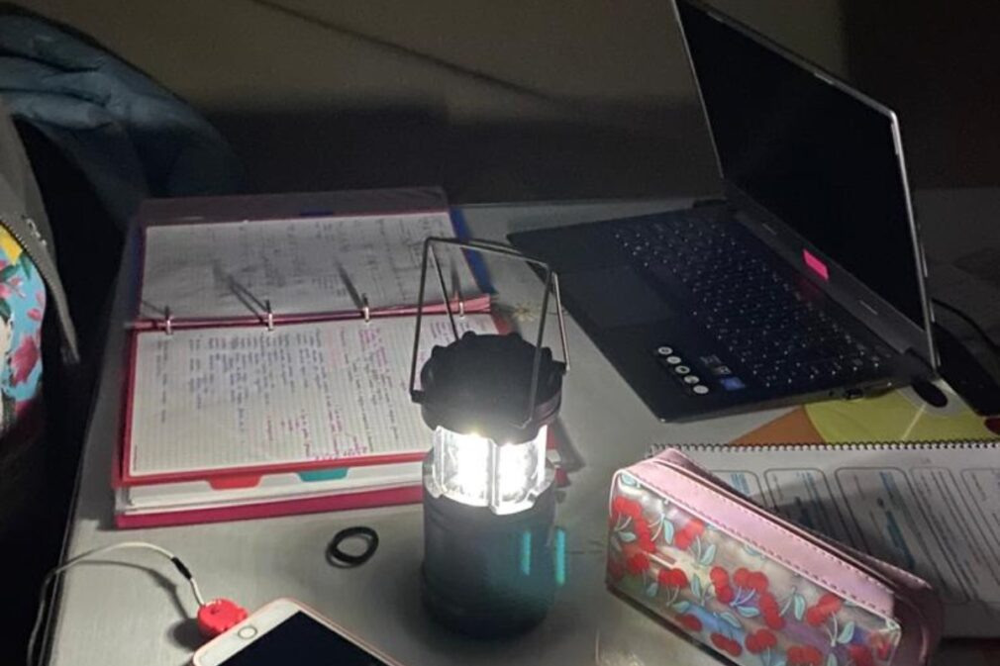
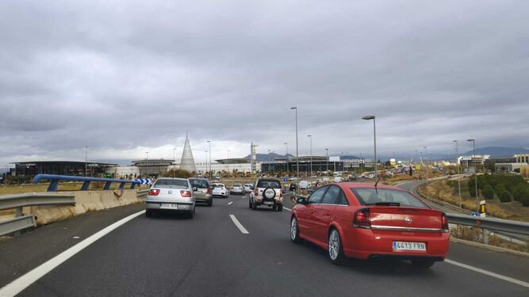

Solo tres cuartos de hora después, el colectivo vecinal volvía a compartir otras dos instantáneas que ilustraban la cruda realidad de lo que está sucediendo en la zona Norte de Granada. En la primera, un joven combatía desde el sofá el frío de la noche con la única ayuda de una manta, una vela y su sudadera con capucha. La segunda correspondía a una familia entera que, ataviada de ropa y mantas hasta la cabeza, se juntaba alrededor de la mesa del salón, trufada de velas. "Los vecinos nos siguen mandando fotografías. ¡Ya no se nos puede hacer más daño! Vivir a oscuras no es vivir, es sobrevivir mientras Endesa gana miles de millones a nuestra costa y las puertas giratorias impiden hacer justicia", rezaba esta vez el texto.
La llegada del frío y las lluvias agravan un año más el problema de los cortes de luz en la zona Norte. Son ya más de diez años a la espera de que se solucione una situación que mantiene al barrio bajo unas condiciones de vida tercermundistas. En este sector de la capital no existen días invierno sin frío ni de verano sin calor porque ni las estufas ni los aparatos de aire acondicionado funcionan por culpa de los apagones. El flujo de corriente eléctrica se ha convertido ya en un bien azaroso. Los vecinos se aferran a que cada jornada sea un "hoy sí" en lugar de un "otro día sin luz".
Este martes algunos conductores de Granada y el Área Metropolitana han llegado tarde a sus lugares de trabajo, colegios, institutos o citas varias. El alcance entre dos vehículos en la Autovía de Circunvalación de Granada GR-30 ha provocado el caos circulatorio esta mañana en la ciudad, causando retenciones de hasta 10 kilómetros.
Este hecho ha provocado unas largas colas tanto en la propia carretera como en los accesos a esta. El atasco ha sido tal que ha afectado a las salidas de Carretera Málaga, La Chana, Mendez Nuñez, Recogidas y Armilla, habitualmente de las más concurridas a primeras horas de cada jornada.